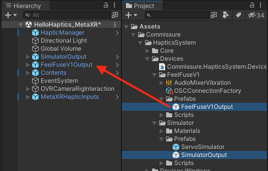
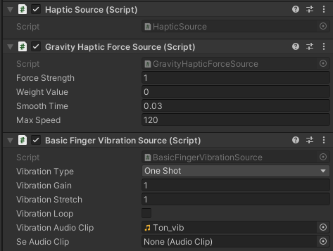
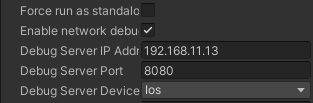

4. FF-SDK-Unityアプリケーション開発
4.1. FF-SDK-Unityアプリケーション開発の基本
FF-SDK-Unityアプリケーション開発の基本的な流れは以下のようになります。
(FF-SDK-Unityのセットアップは完了している前提です。)
シーンにHapticManagerプレファブを配置する
Assets/Commissure/HapticsSystem/Core/Prefabs/HapticManager をシーンに配置します。
シーンに任意のHapticOutput系プレファブを配置する
Assets/Commissure/HapticsSystem/Devices/FeelFuseV1/Prefabs/FeelFuseV1Output などのプレファブをシーンに配置します。

HapticOutputの種類と説明については 4.3.2. HapticOutput をご参照ください。HapticManagerとHapticOutputを関連付ける
HapticManagerのInspectorでOutputsフィールドに、シーンに配置したHapticOutputを設定します。
以下の図では、2つのHapticOutputを関連付けています。
これにより2つの出力先へ触覚が出力されます。
シーンに任意のHapticInput系プレファブを配置する
Assets/Commissure/HapticsSystem/Core/Prefabs/PointHapticInput などのプレファブをシーンに配置します。
以下の図では、4つのHapticInputを配置しています。
MetaQuestを使用する場合は、4.4. UI構築ヘルパーにあるMetaXRHapticInputs.prefabを使用してください。

HapticInputの設定を行う
PointHapticInputには人体のどの部位に相当するかの設定がありますので、適切に設定を行います。

触覚を発生させたいオブジェクトのHapticSource系のコンポーネントをアタッチする
HapticSource, FingerVibrationSource, HapticForceSource の3つのコンポーネントをアタッチします。 HapticSourceはColliderを使用しますので、Collider系のコンポーネントもアタッチします。
以下の例では、基本的な振動触覚を発するBasicFingerVibrationSourceと重力感触覚を発するGravityHapticForceSourceをアタッチしています。
HapticSourceの各種パラメータを変更し、触覚をカスタマイズする
振動を発するためのAudioClipなどの設定を行います。
4.2. 触覚のカスタマイズ
触覚のカスタマイズを行うには、SDKが提供するHapticsSource系コンポーネントの設定をInspectorで変更したり、コードからプロパティを変更することに加え、独自のコンポーネントを作成する方法もあります。
独自のコンポーネントを実装するには、以下のインターフェイスを実装したクラスを作成し、HapticSourceと同じGameObjectにアタッチしてください。
| インターフェイス | 説明 |
|---|---|
| IFingerVibrationSource | 振動触覚ソースのインターフェイス |
| IHapticForceSource | 剪断触覚ソースのインターフェイス |
4.3. SDKが提供するコンポーネント
SDKが提供するコンポーネントは Commissure/HapticsSystem/ 配下に配置されており、下記となります。
4.3.1. HapticInput
| コンポーネント | 説明 |
|---|---|
| Core/Prefabs/PointHapticInput.prefab | 点入力 |
4.3.2. HapticOutput
| コンポーネント | 説明 |
|---|---|
| Devices/Simulator/Prefabs/SimulatorOutput.prefab | 触覚の出力を画面上で確認できるシミュレーター |
| Devices/FeelFuseV1/Prefabs/FeelFuseV1Output.prefab | FeelFuseデバイス用出力 |
| Devices.Windows/FeelFuseV0/Prefabs/FeelFuseV0Output.prefab | USB有線接続版FeelFuseデバイス用出力 |
4.3.3. FingerVibrationSource
| コンポーネント | 説明 |
|---|---|
| Core/Scripts/HapticSources/FingerVibration/BasicFingerVibrationSource.cs | 単一の振動オーディオを出力する |
| Core/Scripts/HapticSources/HapticForce/GravityHapticForceSource.cs | 複数オーディオクリップを切り替えて出力することが可能 |
4.3.4. HapticForceSource
| コンポーネント | 説明 |
|---|---|
| Core/Scripts/HapticSources/FingerVibration/BasicFingerVibrationSource.cs | 重力を出力する |
| Core/Scripts/HapticSources/HapticForce/LinearResistanceHapticForceSource.cs | 線形抵抗力を出力する |
| Core/Scripts/HapticSources/HapticForce/TwoPointHapticForceSource.cs | 2点間の距離に応じた力を出力する |
4.4. UI構築ヘルパー
アプリケーションを開発するために役立つヘルパーコンポーネントが Assets/Commissure/HapticsSystem 配下に用意されています。
| コンポーネント | 説明 |
|---|---|
| UI/Scripts/GenericGrabbable.cs | HapticSourceがアタッチされた物体を掴む操作 HapticSourceと同じGame Objectにアタッチして使用する Meta Questなどデバイス側のSDKで物体を掴む動作が用意されている場合は triggerOnly フィールドをtrueに設定すれば触覚発生の検知のみ行うことが可能 |
| UI.MetaXR/Prefabs/MetaXRHapticInputs.prefab | Meta XR SDKが提供するHandモデルの指先にHapticInputをアタッチし自動追従させるオブジェクト シーンに配置して使用する |
| UI.TofAr/Prefabs/TofARCamera.prefab | ToF AR SDKが提供するHandモデルの指先にHapticInputをアタッチし自動追従させるオブジェクト シーンに配置して使用する |
4.4.1. MetaXRHapticInputsの設定
- UI.MetaXR/Prefabs/MetaXRHapticInputs.prefab をシーンに配置する。
- MetaXRHapticInputs配下の4つのHapticInputにアタッチされている HandJoint コンポーネントのHandフィールドの参照を設定する。
参照先は下記のようにする。
| コンポーネント | 参照先 |
|---|---|
| HapticInputLeftThumb | LeftHandSynthetic |
| HapticInputLeftIndex | LeftHandSynthetic |
| HapticInputRightThumb | RightHandSynthetic |
| HapticInputRightIndex | RightHandSynthetic |

- MetaXRHapticInputs配下の4つのHapticInputにアタッチされている HandJoint コンポーネントのJoint Idフィールドの値を設定する
値は下記のようにする
| コンポーネント | Joint Id 値 |
|---|---|
| HapticInputLeftThumb | Hand Thumb Tip |
| HapticInputLeftIndex | Hand Index Tip |
| HapticInputRightThumb | Hand Thumb Tip |
| HapticInputRightIndex | Hand Index Tip |
4.5. 開発・デバッグ支援機能
ヘッドマウントディスプレイを被らない状態でのハンドトラッキングを使用した開発・デバッグを効率化する目的で ToF AR SDK を使用することができます。
- ToF AR 動作対応スマートフォン（Face IDに対応したiPhoneやiPad Pro）でApp Storeより ToF AR Serverをダウンロードする。
https://apps.apple.com/jp/app/tof-ar-server/id1613866652 - シーンにTofArCamera.prefab を配置する。
- スマートフォンとUnityを使用しているPCを同一ネットワークに接続する。
- スマートフォンでToF AR Serverを起動し、画面に表示されたIPアドレスを確認する。
- そのIPアドレスをシーン上の TofArCamera/TofArManagerのInspector上のDebug Server IP Addressに設定する。
 - Unity Editorを再起動する。
上記設定を行った後、シーンをPlayするとスマートフォンのFace IDカメラ映像でハンドトラッキングが行われ、物体に触れたり掴むといった操作を行いながら開発・デバッグを行うことができます。

4.6. USB有線接続版FeelFuse接続設定
USB有線接続版FeelFuseはWindows PCのCOMポートを使用して通信を行います。
通信に使用するCOMポートは、FeelFuseV0Outputオブジェクト配下の SerialPort_Left および SerialPort_Right オブジェクトのInspectorで指定します。
設定値はPCローカルに自動保存されるので、次回起動時の再設定は不要です。